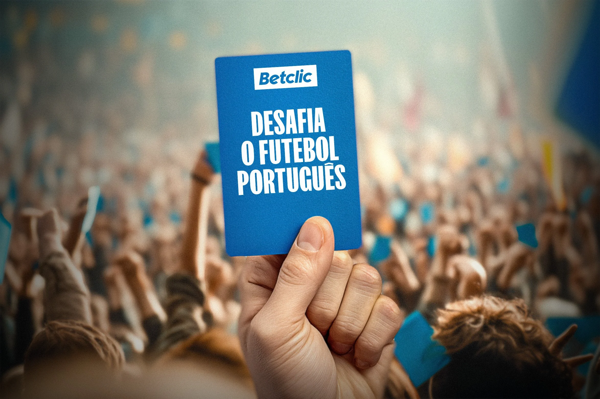

The Portuguese football league is one of Europe's slowest, with effective playing time barely reaching half a match, largely thanks to some of the world's most skilled anti-play performers.
Days before the brief was issued, FIFA banned the blue card, a futsal tool used to penalise exactly that behaviour. Betclic took the cue: if referees can't show it, the fans will.
The Idea: The Blue Card becomes a symbol of fan defiance, a way to challenge Portuguese football's culture of time-wasting, handed directly to the people in the stands.
A bold, culturally loaded idea that turned a regulatory moment into a fan movement, and put Betclic at the centre of the conversation.
Art Direction - Vasco R. Cunha
Copywriter - Manuel Stock